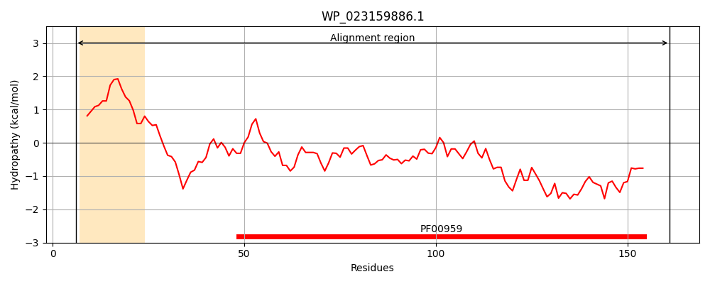
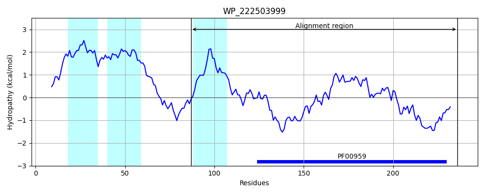
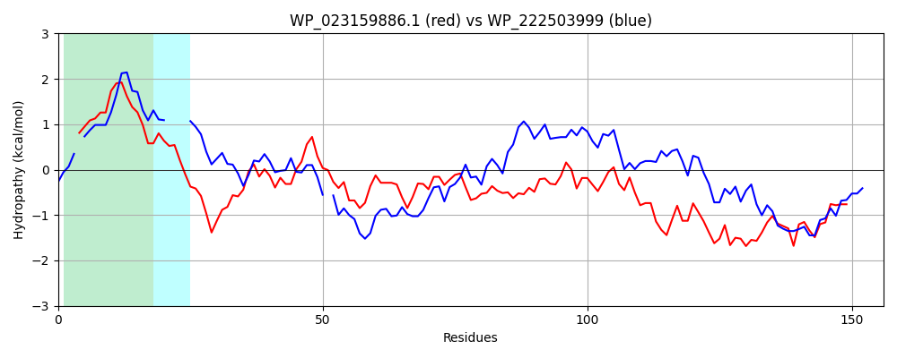

Hit Accession: WP_222503999
Hit TCID: 1.E.64.2.5
Hit Description: gnl|BL_ORD_ID|22117 gnl|TC-DB|WP_222503999.1|1.E.64.2.5 lysozyme [Leisingera daeponensis]
Mach Len: 156
e:0.000000
Query TMS Count : 1
Hit TMS Count: 3
TMS-Overlap Score: 0.900000
Predicted Substrates:None
BLAST Alignment:
Score: 287 , Bit scores: 115 bits, E-value: 2.4e-32, Alignment length: 156, Percentage identity: 42
Query: 6 RKSVLAAVGGGALAIASALITGPTGNDGLEGVRYDPYQDVVGVWTVCYGHTGKDIMLGKTYTEAECRALLNKDLNTVAWQINPYIKKPIPETMRGALYSFAYNVGARNFQNSTLLHKINQGDQKGACDQLRRWTYAKGKQWKGLITRREIEREVCL 161
R+SV +G G +A+A+A+I EG+R YQDVVGVWTVCYG T K + G ++T+AEC +L +++ ++ + +P M+ AL S+ YNVGA S L+ K N GD GAC +L RW A G+ W+GL RR ER +CL
Sbjct: 87 RRSV-GVLGTGGVALAAAVIF----IGQWEGLRTSAYQDVVGVWTVCYGET-KGVKPGDSHTKAECDQMLAQEIGRYEAALDRCLTADVPVGMKIALVSWTYNVGAGAACRSALVRKANAGDLVGACHELPRWNRAGGRVWRGLTNRRLSERNMCL 236 | Protein Hydropathy Plots: |
|---|
|  |  |
Pairwise Alignment-Hydropathy Plot:
|
|---|
|  |